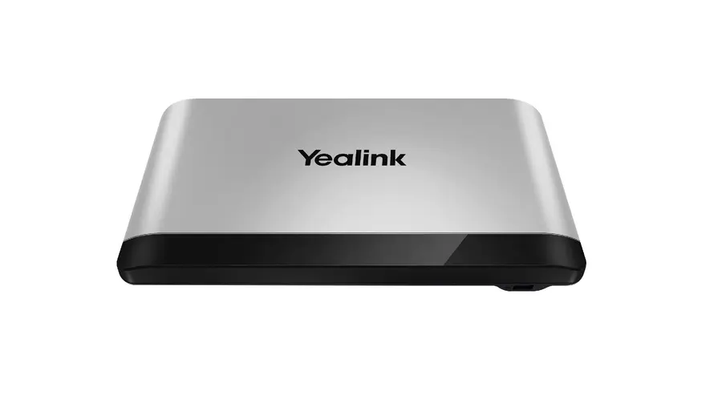

Терминалы видеоконференцсвязи
Модельный ряд терминалов Yealink для видеоконференцсвязи представлен несколькими сериями, предназначенными для переговорных комнат различного размера – от небольших (серия VC200) до крупных, с числом участников до 24 человек (серия VC800). Терминалы видеоконференцсвязи Yealink поддерживают захват видео в высоком разрешении, автоматическую фокусировку PTZ-камеры на говорящем человеке, и возможность подключения дополнительных микрофонов и камер. Кроме того, терминалы быстро подключаются и легко настраиваются.